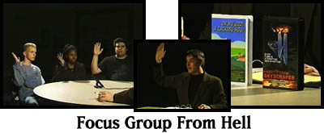
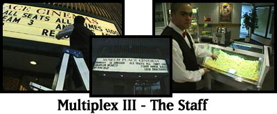

Video on Vinyl: Then and Now
First up P.H. O'Brien and Doug Stone go from NYC to London in search of
the legacy of the mysterious inventor John Logie Baird. Over the years
we've tried to show you some strange and unusual images but have you ever
even dreamed about a television image on a record circa 1928?

Focus Group From Hell
Have you ever been the subject of market research? Especially movie
market research? Well, if it's conducted by Keythe Farley and filmed by
Brian Flemming, who demonstrated their unique techniques on Split Screen
last season, you know you're in good hands... sort of.

Multiplex III - The Staff
Finally, our 3rd and last visit to Salem's Museum Place Cinemas. You
know, sometimes it's hard to look busy if you have a boring part-time job,
and that's what most movie theatre jobs are -- especially in a multiplex
between shows when everybody is in the movies. Fortunately, for this
crew, P.H. O'Brien was around to keep them company.